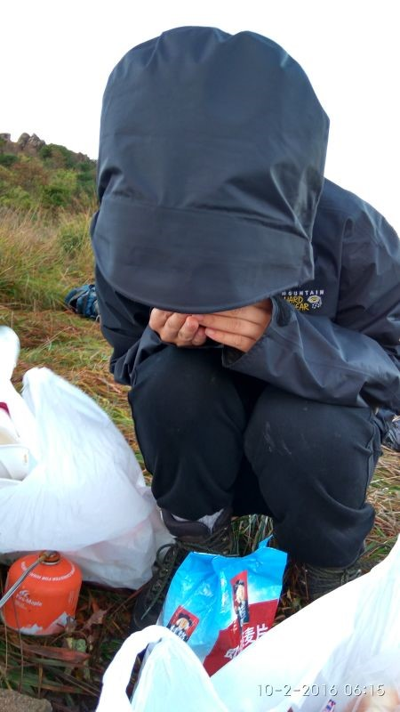
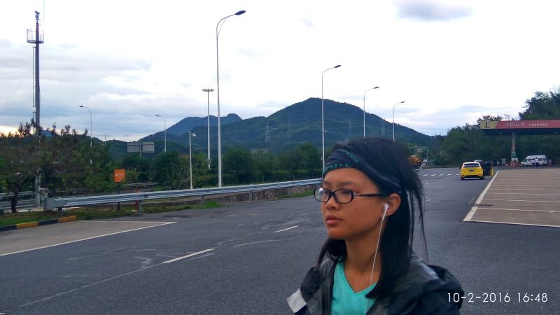
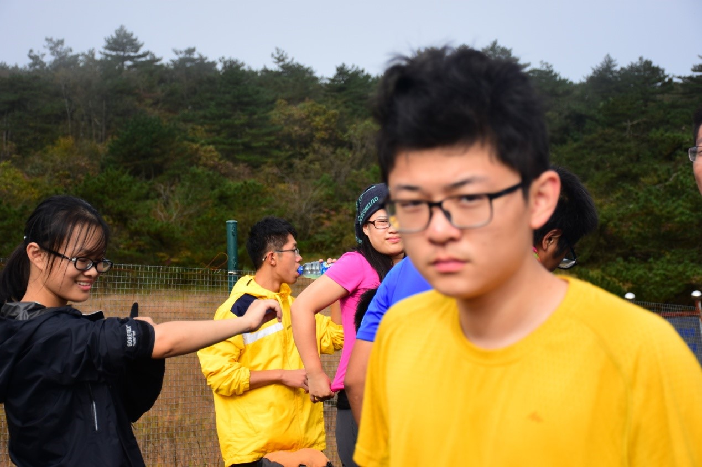
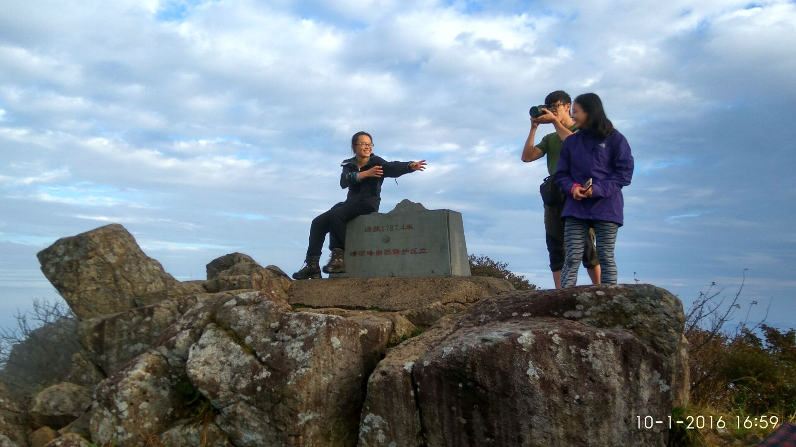
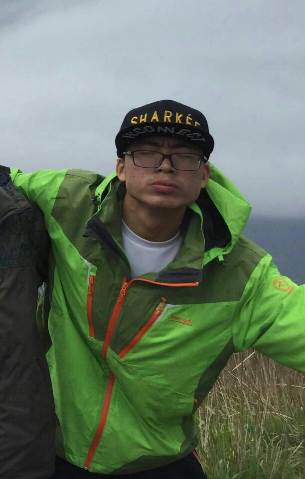
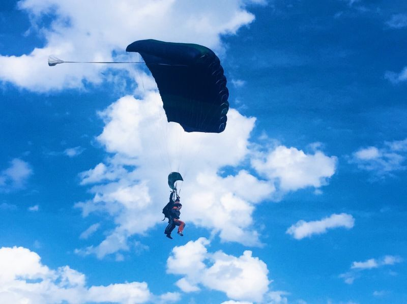
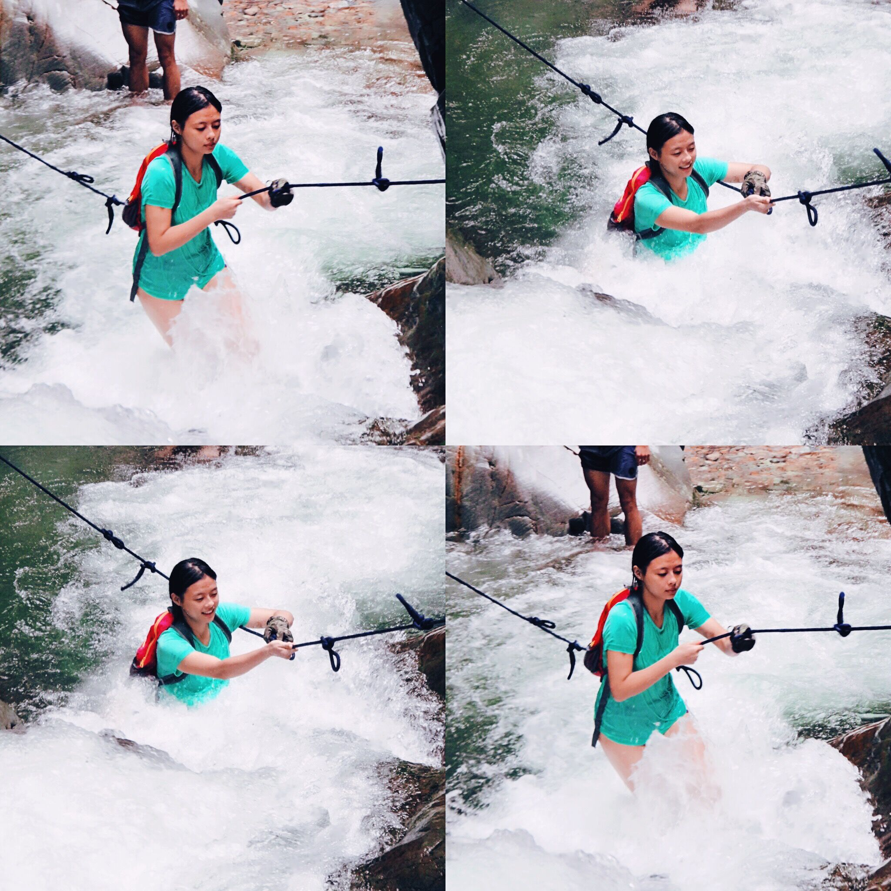

发信人: lvganyu (小雨儿), 信区: outdoor
标 题: 【团爆】组织部！
发信站: 饮水思源 (2016年12月21日18:35:07 星期三)
部长：蒋峰铭
蒋峰铭，性别女!现在还是大二小鲜肉一枚，虽然在野协混了一年，仍旧是个体力弱渣，出
线经历也远不如我的副部们···爱野协，带你浪带你玩~带你装逼~带你飞~
不爱拍照，找了最近一次线清凉峰的照片，上图：
第一张不要脸一下（真没有脸）
 screen.width - 200){this.width = screen.width - 200}">
第二张：黑一下自己，在休息站，头发睡乱了_(:зゝ∠)_
 screen.width - 200){this.width = screen.width - 200}">
入了别人的照，感觉这张还能看，偷偷截了个屏╭( ･ㅂ･)و
̑̑
 screen.width - 200){this.width = screen.width - 200}">
（以及别人偷偷爆给在下的黑（划掉）美照）
 screen.width - 200){this.width = screen.width - 200}">
副部长：谢礼（这是一个羞涩の孩子）
大家好，我叫谢礼。大一下学期加入的野协，野协给了我很多：体质，品质，还有珍贵的
友谊，谢谢野协！我热爱旅游，登山，冒险，有志同道合的人，约起！！！
 screen.width - 200){this.width = screen.width - 200}">
screen.width - 200){this.width = screen.width - 200}">
副部长：叶苏珊娜 （颜值担当！颜值担当！颜值担当！）
叶苏珊娜 大二 组织部副部长
刚进野协就被大家叫学姐/大哭 我明明就是学妹
喜欢运动 喜欢冒险 更喜欢野协/大爱
自己是有机会就会去尝试更种运动啦～
跳伞 蹦极 冲浪 ~
只要是运动都喜欢啦
很庆幸能在野协这个大家庭里面 在这里真的能学到很多很多 认识很多新朋友 我们应兴趣
而聚集在一起 希望以后能一直呆在这里~/比心比心
要学的 要走的路还有很长很长~
 screen.width - 200){this.width = screen.width - 200}">
screen.width - 200){this.width = screen.width - 200}">
 screen.width - 200){this.width = screen.width - 200}">
副部长：史万荣 （这只还是攀岩队长，我就先不放照片了，留点悬念）
本人纯洁小白一只，跟他们这些整天呜呜呜开火车的火车司机不能比。身为组织部副部长
兼职攀岩队队长，最主要的就是为组织部奉献自己的力量，顺便给攀岩队挂挂绳，指导一
些训练什么的……为人和善，笑起来“很靠谱”——被很多人这样说过，确实是一个蛮靠
谱的人，不过比较懒，所以……平时比较喜欢沉默，不过这一般是没有打开话匣子，一旦
找到能聊得来的，就滔滔不绝一泄千里了…希望大家都能喜欢我…目前单身不可撩…就酱
了
副部长：李宾锐 （这个四部公共副部长就写了这么点儿，我只能一会儿放到登山队的时候
多放点照片了）
电院大二，正式登山一年多，走过干事会员线若干，参加过观音尖探路，武功山小队伍线
领队，参加过太白小队伍线，户外经验较为丰富。性格开朗，爱好广泛，立志于去更远的
地方，登更高的山峰，看更美的风景。
--
( ・ˍ・) (・ˍ・*)
※ 来源:·饮水思源 bbs.sjtu.edu.cn·[FROM: 59.78.32.54]
|